- 00 开篇词 JavaScript的进阶之路.md.html
- 01 函数式vs.面向对象：响应未知和不确定.md.html
- 02 如何通过闭包对象管理程序中状态的变化？.md.html
- 03 如何通过部分应用和柯里化让函数具象化？.md.html
- 04 如何通过组合、管道和reducer让函数抽象化？.md.html
- 05 map、reduce和monad如何围绕值进行操作？.md.html
- 06 如何通过模块化、异步和观察做到动态加载？.md.html
- 07 深入理解对象的私有和静态属性.md.html
- 08 深入理解继承、Delegation和组合.md.html
- 09 面向对象：通过词法作用域和调用点理解this绑定.md.html
- 10 JS有哪8种数据类型，你需要注意什么？.md.html
- 11 通过JS引擎的堆栈了解闭包原理.md.html
- 12 JS语义分析该用迭代还是递归？.md.html
- 13 JS引擎如何实现数组的稳定排序？.md.html
- 14 通过SparkPlug深入了解调用栈.md.html
- 15 如何通过哈希查找JS对象内存地址？.md.html
- 16 为什么环形队列适合做Node数据流缓存？.md.html
- 17 如何通过链表做LRU_LFU缓存？.md.html
- 18 TurboFan如何用图做JS编译优化？.md.html
- 19 通过树和图看如何在无序中找到路径和秩序.md.html
- 20 算法思想：JS中分治、贪心、回溯和动态规划.md.html
- 21 创建型：为什么说Redux可以替代单例状态管理.md.html
- 22 结构型：Vue.js如何通过代理实现响应式编程.md.html
- 23 结构型：通过jQuery看结构型模式.md.html
- 24 行为型：通过观察者、迭代器模式看JS异步回调.md.html
- 25 行为型：模版、策略和状态模式有什么区别？.md.html
- 26 特殊型：前端有哪些处理加载和渲染的特殊“模式”？.md.html
- 27 性能：如何理解JavaScript中的并行、并发？（上）.md.html
- 28 性能：如何理解JavaScript中的并行、并发？（下）.md.html
- 29 性能：通过Orinoco、Jank Busters看垃圾回收.md.html
- 30 网络：从HTTP_1到HTTP_3，你都需要了解什么？.md.html
- 31 安全：JS代码和程序都需要注意哪些安全问题？.md.html
- 32 测试（一）：开发到重构中的测试.md.html
- 33 测试（二）：功能性测试.md.html
- 34 测试（三）：非功能性测试.md.html
- 35 静态类型检查：ESLint语法规则和代码风格的检查.md.html
- 36 Flow：通过Flow类看JS的类型检查.md.html
- 37 包管理和分发：通过NPM做包的管理和分发.md.html
- 38 编译和打包：通过Webpack、Babel做编译和打包.md.html
- 39 语法扩展：通过JSX来做语法扩展.md.html
- 40 Polyfill：通过Polyfill让浏览器提供原生支持.md.html
- 41 微前端：从MVC贫血模式到DDD充血模式.md.html
- 42 大前端：通过一云多端搭建跨PC_移动的平台应用.md.html
- 43 元编程：通过Proxies和Reflect赋能元编程.md.html
- 结束语 JavaScript的未来之路：源于一个以终为始的初心.md.html
- 捐赠
19 通过树和图看如何在无序中找到路径和秩序
你好，我是石川。
在算法中，最常见的两个操作莫过于排序和搜索了。前面我们通过数组了解了在线性的数据结构中不同的排序算法。之后，我们又通过哈希算法了解了散列表这种比较特殊的线性表，了解了它是如何与链表结合，用空间换时间地支持索引和查找的。
在现实的生活中，我们可以看到信息并不总是有序的，我们在讲到函数式编程的时候有提到过，函数思想的一个维度就是如何处理未知和混沌。那么函数中的数据结构和算法呢，作为现实世界的映射，也要能处理这样复杂的情况。今天，我们来看两种支持我们处理这种未知和混沌的非线性的数据结构。一种是树，另外一种是图。
我们知道一些大的咨询公司如麦肯锡，经常用到“金字塔原理”来做解决方案。它的核心原理呢，讲的就是我们平时接收的信息是杂乱无章的网状结构的，而我们要做的是在杂乱无章的信息中梳理出“金字塔”式的树形信息结构，最后呢，再用线性的“讲故事”的方式讲述出来。这就像极了我们在算法中用到的各种数据结构。
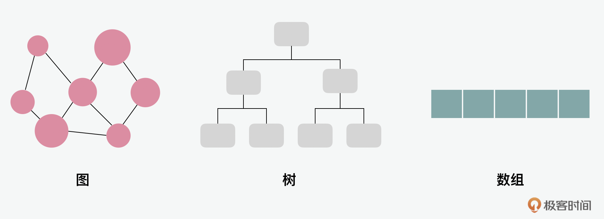
今天我们就深入来看看图和树这两种数据结构。我们先从图说起，图就是一种非线性的数据结构。我们生活中有很多无序的网络组织都可以用图来表示，比如社交网络，我们的互联网通信、城市的道路、网站的链接。如果用我们前端开发的视角来看的话，不同依赖资源本身也可以被看做是无序的，而例如我们前端经常用到的webpack的模块加载功能就是一个在无序中建立秩序，帮助我们厘清资源之间相关依赖关系的工具，这种功能就可以通过拓扑排序来实现。我们可以先从图这种数据结构本身说起，来一步步看下它是怎么做到的。
通过拓扑排序建立资源依赖
首先，我们来看下图的结构。
深入了解图的类型和结构
在上一节当中，我们说过一个图就是由边（edge） 相连的节点（node） 组成的。如果延伸来看，我们可以将通过一条线相连接的两个节点叫做相邻节点（adjacent vertices）。同时，我们可以把一个节点连接的数量叫做度（degree）。一个边也可以加权（weighted）。一条路径（path）就是一组相邻节点的序列。
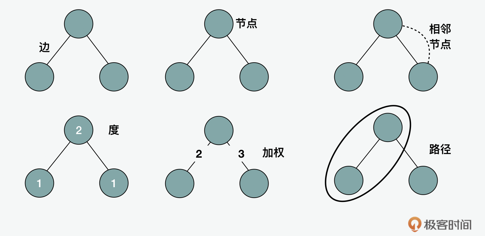
一条可以回到原点的路径是循环图（cyclic graph）。一个没有可以回到原点的路径的图被称作无环图（acyclic graph）。如果图之间的边是有指向的就会被称为是有向图（directed graph），反之，如果图之间的边没有指向，就被称之为无向图（undirected graph）。如果一个图是有向无环的，就叫做我们上一讲提到过的有向无环图（DAG，directed acyclic graph）。
一种用来存储图的方式是通过邻接矩阵（adjacency matrix）。如果一个图的相邻节点较少就被称为稀疏图（sparse graph）；相反的如果一个图的相邻节点较多的话，就被称为稠密图（dense graph）。对于稀疏图来说，用邻接矩阵来存储可能就会造成资源的浪费，因为这个矩阵中可能为了几个节点来维护一个较高的空间复杂度。同样，邻接矩阵在支持节点的插入删除也具有劣势。所以另外一种用来存储图的方式就是通过邻接表（adjacency list）。这种数据结构既可以用数组，也可以用链表、 哈希或者字典来表示，所以可以和邻接矩阵形成有效的互补。
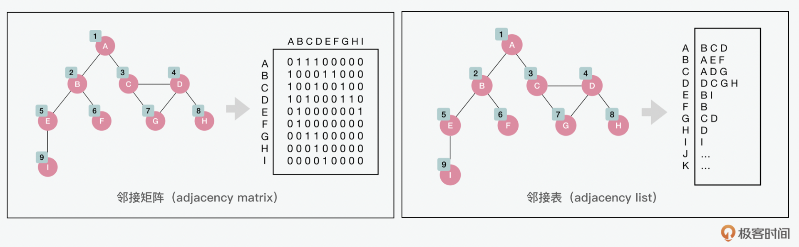
对图的遍历有两种经典的方式，一种是广度优先搜索（BFS，breath first search），另外一种是深度优先搜索（DFS，depth first search）。广度优先搜索最经典的使用场景就是寻找最短路径（shortest path）的场景了。而深度优先搜索呢，就是我们前面说到的拓扑排序（topological sorting）可以用到的一种遍历方式。这里，我们可以先从广度优先搜索开始看起。
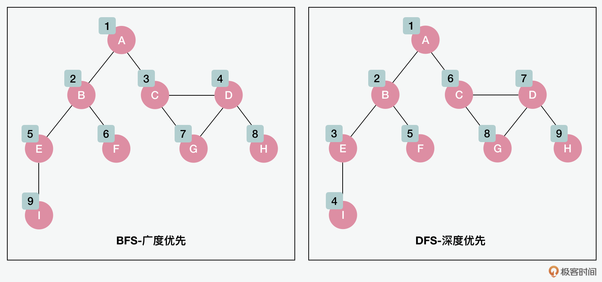
如何在选择中找到最短路径
最短路径在生活中非常常见，比如我们常用的地图。常见的最短路径的算法有迪杰斯特拉Dijkstra和弗洛伊德-沃舍尔Floyd-Warshall。下面我们可以选Dijkstra（迪杰斯特拉）算法来看看。如图所示，假设我们要计算从A到B、C、D、E和Z的最短距离。
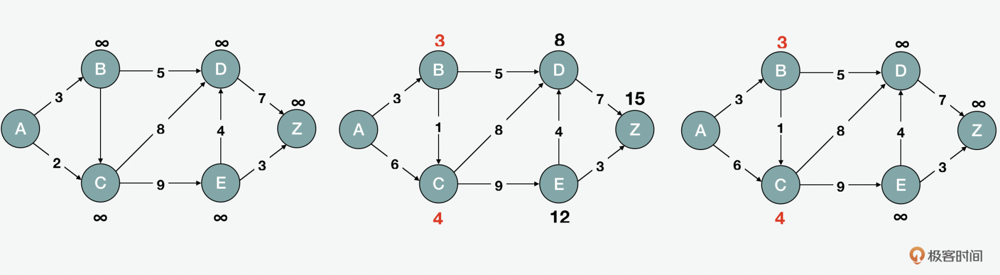
Dijkstra的算法先将所有的距离初始化为无限dist[i] = INF；已访问的数组为否visited[i] = false，然后把从源头到自己的距离设置为零dist[src] = 0。接下来，为了找到最短距离，我们寻找还未被处理的节点中最短的一个minDist(dist, visited)，然后将它标记为已访问visited[u] = true；当找到并设置最短距离dist[u] + graph[u][v]后，所有路径的数组会被返回。下面是简化后的代码：
const dijkstra = (graph, src) => {
for (let i = 0; i < length; i++) {
dist[i] = INF;
visited[i] = false;
}
dist[src] = 0;
for (let i = 0; i < length - 1; i++) {
var u = minDist(dist, visited);
visited[u] = true;
for (let v = 0; v < length; v++) {
if (...dist[u] + graph[u][v] < dist[v]) {
dist[v] = dist[u] + graph[u][v];
}
}
}
return dist;
};
如何在无序中找到资源依赖
回到开篇的问题，比如我们在用webpack或类似的工具做资源打包的时候，要知道模块间的依赖关系是很重要的。如果我们把这个命题抽象出来看，就是对于有向图来说，要知道如何在混乱中建立秩序，分析出哪个节点先被处理是很重要的。所以下面我们就来看看拓扑排序（topological sorting）是如何做到对资源依赖的管理的。这里其中一个方法是会用到深度优先DFS的遍历。
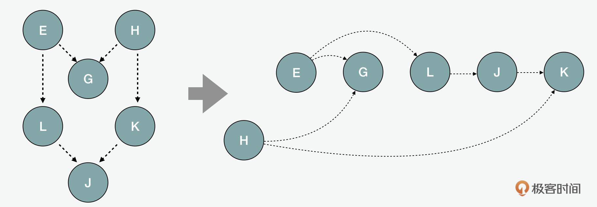
其实简单地来说，拓扑排序用的就是从一个节点开始，进行深度优先的遍历，直到和它相连的每个顶点都用递归方式穷尽为止。每一次递归中的节点被加到一个访问过的visited集合中，以此类推，最后，在递归结尾，把节点用unshift以相反的顺序插到数组头部。
dfs = function(v, visited, stack) {
visited.add(v);
for (var item in this.edges[v]) {
if (visited.has(item) == false) {
this.topologicalSortUtil(item, visited, stack)
}
}
stack.unshift(v);
};
dfsTopoSort = function() {
var visited = {},
stack = [];
for (var item in this.edges) {
if (visited.has(item) == false) {
this.dfs(item, visited, stack);
}
}
return stack;
};
通过字典树建立Web API的路由
说完了图，下面，我们再来深入看下树的结构和它所支持的算法。
深入了解树的类型和结构
树（tree） 可以说是非常常见的一种数据结构了。它和我们平时看到的树没有区别，在树根树干上，有不同的分支和叶子。这些分支和叶子在树结构里就是节点（node）。只是我们在数据结构中，一般可视化的画一个树的时候，会把它的头尾倒过来。大家应该都见过公司的组织架构，这就可以被理解成树状结构了，它就是一个自上而下的节点组成的。在树的顶端，就是公司的CEO，这个节点叫做根（root）。在前端，我们使用的HTML也是一个非常典型的树形结构，在下的每一个元素都有父节点和子节点。我们前面讲过的编译原理中的AST语法树也是一种树的结构。
在树型的结构中，有二叉树（binary tree）和二叉查找树（BST，binary search tree）。虽然它们写法类似，但代表的是不同的意思。二叉树是最多只有2个子节点的树，而二叉查找树是指一个左节点的值小于右节点的树。二叉树里面分为满二叉树（full binary tree）和完全二叉树（complete binary tree）。在二叉树的遍历中，分为前中后三种顺序的遍历。下面我们依次来看一下。
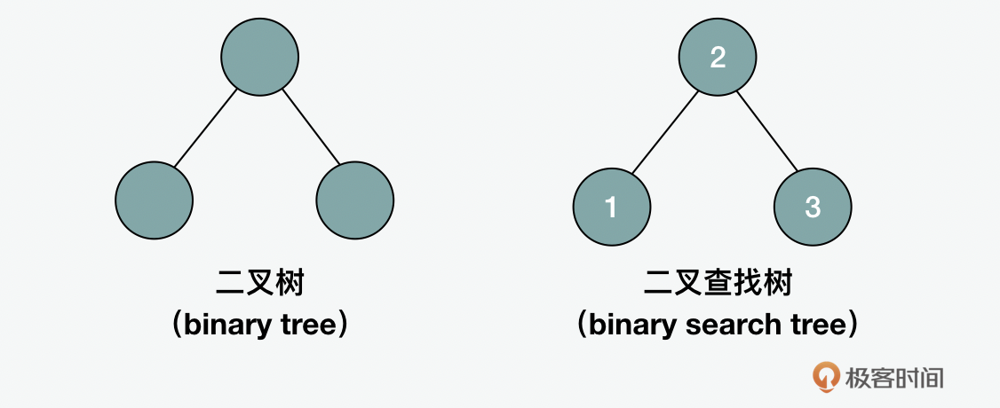
在二叉查找树中有三种遍历的方式。第一种是中序遍历（in-order traversal），这种方法是对节点展开的从小到大的遍历，它的遍历顺序是左、根、右；第二种是前序遍历（pre-order traversal），这种方法是在先访问根节点再访问子节点，它的遍历顺序是根、左、右；第三种是后序遍历（post-order traversal），这种方法是在访问子节点后访问它的父节点，它的遍历顺序是右、左、根。除了这三种以外，还有层次遍历（level order traversal），这种方式就是上面我们讲到图的时候讲到的深度优先搜索（DFS，depth first search）的原理。
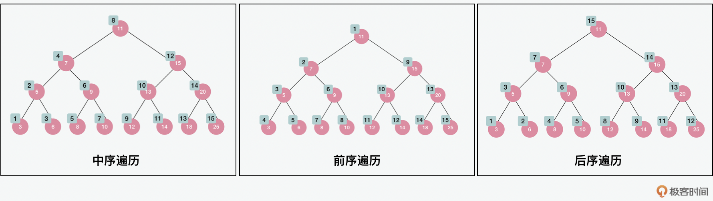
二叉查找树有一个问题，就是当这个树的一个分支过深的时候，在增加、减少和查找的时候，可能会出现性能上的问题。所以在二叉查找树的基础上，有了AVL树（AVL tree，Adelson-Velskii and Landi’s tree）和红黑树（Red-Black tree），它们都属于平衡二叉树（balanced binary tree）。对于AVL树来说，它的左边和右边最多就差一级。
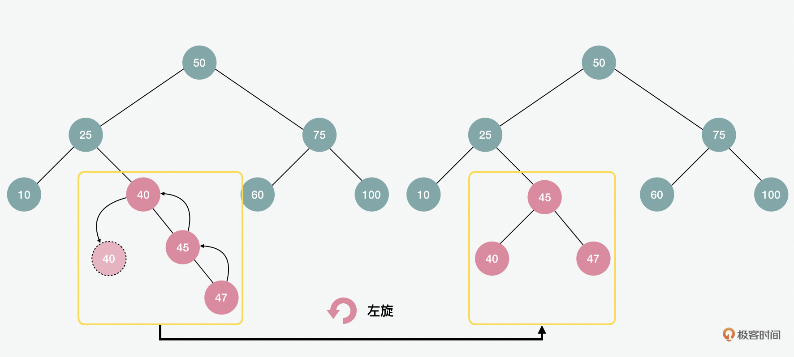
为了在插入后保持平衡，AVL树会通过左旋或右旋的方式来调整。比如以上的例子就是左旋，下面的例子中，我们也可以看到右旋。在理想的状态下，AVL的复杂度是\(O(log2(n))\)。但是当有频繁的插入、删除等操作的时候，效率就会下降。在极端情况下它的复杂度会退化到\(O(n)\)。
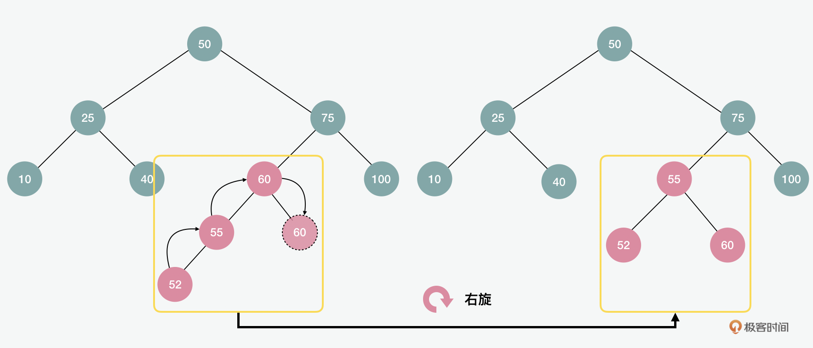
虽然AVL的查询效率很高，但是为了保持节点插入或者删除后的平衡所进行的旋转操作，可能会导致复杂度的增加。这时红黑树的出现，就可以避免类似问题。那红黑树是怎么做到保持较低复杂度的呢？下面，我们来看看。红黑树的特点是每个节点都是红色或黑色的。根节点和所有叶子节点都是黑色的。
如果一个节点是红色的，那么它的两个子节点都是黑色的。不能有两个相邻的红色节点，也就是说红色节点不能有红色父或子节点。从给定节点到其以后的每条路径都包含相同数量的黑色节点。关于插入，它也有2个原则，1是插入的节点需要是红色，2是插入的位置需要是叶子节点。
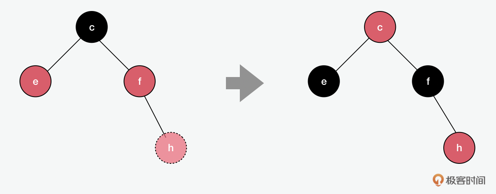
基于上面的原则，我们可以在上图看到，当我们想要加入h的时候，如果它是根节点，就直接用黑色即可；但它是叶子节点，所以是红色。插入后，如果父节点f是黑色，那就什么都不用做；但f是红色，所以就要把f改成黑色，除了父亲，往上的祖父节点也要跟着调整。从c出发的节点要包含相同数量的黑色节点，所以e的颜色也会相应调整为黑色。在下面例子中，我们看到除了换色，红黑树和AVL一样，有时也需要用到旋转。
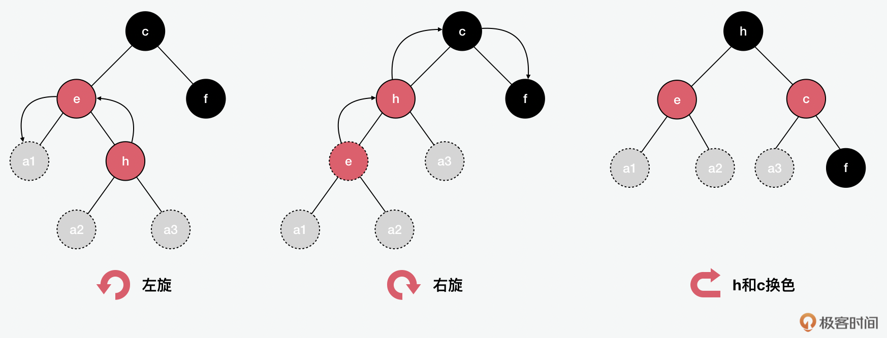
红黑树的好处是它的查询、插入、删除等操作的复杂度都比较稳定，可以控制在\(O(log2(n))\)。
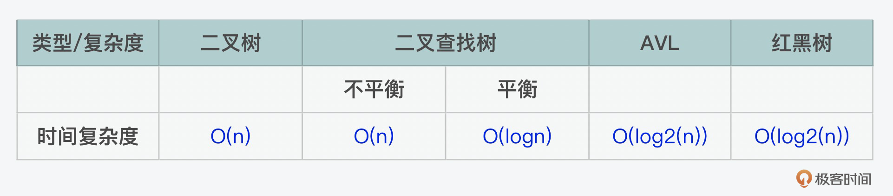
在树当中，有一种特殊的树的结构，就是堆（heap）。没错，前面讲到函数调用栈中堆栈这个概念的时候呢，是将堆作为内存存储空间介绍的。今天我们说的堆，是从一个数据结构的角度来看，那么堆是一个完全二叉树。那么完全二叉树和满二叉树有什么区别呢？满二叉树是除最后一层没有任何子节点以外，其它每一层的所有结点都有两个子结点二叉树。而完全二叉树指的是叶节点只能出现在最下层和次下层，并且最下面一层的结点都集中在该层最左边的若干位置的二叉树。
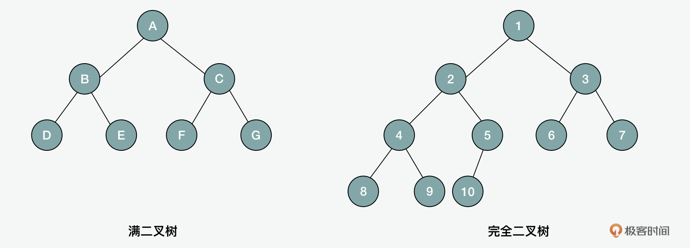
堆的特点在于它所有结点的值必须“大于或等于”或“小于或等于”其子结点的值。它和其它的树型结构通过对象存储节点和指针的方式不太一样的地方在于，它可以用一个数组来存储。它可以被用于优先级队列，另外一个比较常见的应用就是堆排序。和快排和归并排序类似，它的时间复杂度也是\(O(nlog2(n))\)。不过有一点需要注意的是在堆排序的场景里，因为它对比交换（compare and swap）的次数可能要比快排多，所以虽然它们的时间复杂度一样，但是实际从性能上看，堆排序的性能会相对较低。
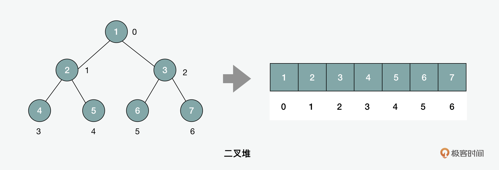
字符串的匹配算法有哪些
说完了树，我们再看一下字符串。你可能问字符串和树有什么关系？其实，这里，我们就要说到另外一种特殊的树型的数据结构，字典树（trie）。但是说到trie前，我们可以先看看暴力（BF，Brute Force）、BM（Boyer-Moore）、RK（Rabin–Karp）和KMP（Knuth–Morris–Pratt） 这几种用于字符串的匹配的算法。首先我们可以对比下暴力和BM算法。在下面图中，我们可以看到将一组字符串和一个模式的对比。
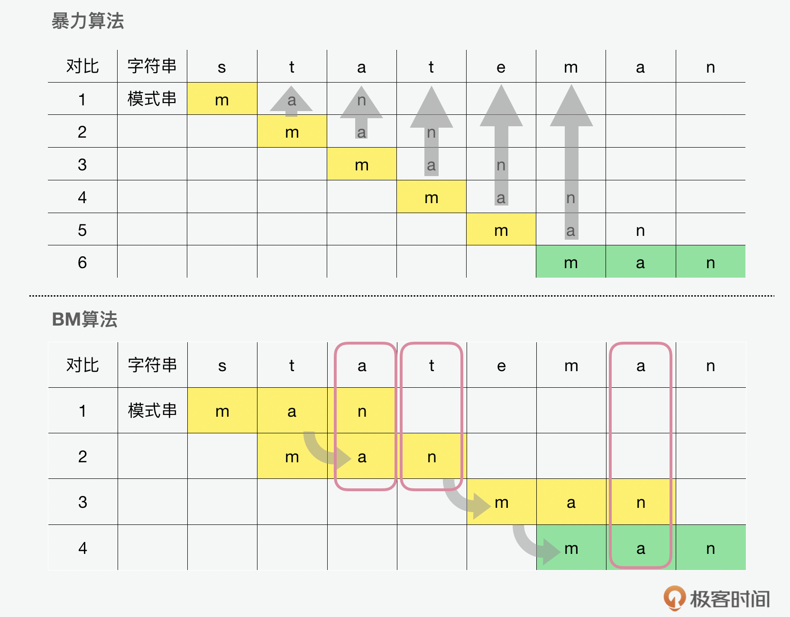
从上图中，我们可以看到如果使用暴力，也叫朴素（naive） 算法的话，在每一轮的迭代中，字母是一个一个移动的，直到匹配到为止，这种滚动匹配的方式一共要经历6个迭代。所以暴力算法虽然简单粗暴，但是效率却不高。而BM算法的话，可以用到图中坏字符（bad character） 这种方式，在字符串中看到和模版不匹配的坏字符就滑动跳过。除了坏字符，还有好后缀（good suffix） 的方式也可以达到类似的效果，它的原理就是在字符串中看到和模版匹配的好后缀就滑动对齐。这样通过跳过或对齐的滑动匹配的方式就能减少迭代的步骤。
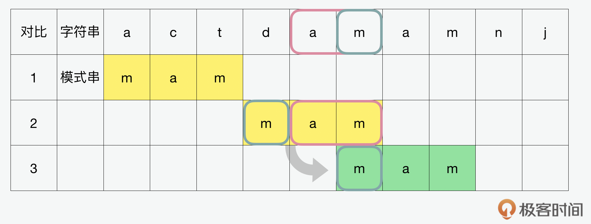
KMP和BM类似，但是匹配的顺序是倒过来的。在BM中，我们看到的是前面是坏字符，后面是好后缀。KMP看到的是前面是好前缀，后面是坏字符。在这里，只要找到了不匹配的，就知道下一个要从哪里开始再搜索了，避免了重新验证之前出现过的字符。
说完了BM和KMP，我们最后再来再看一下RK算法。这种方式的匹配方法是用一个字符串中的子串和模式串的哈希值做对比，如果哈希值是相等的，那就证明匹配上了。
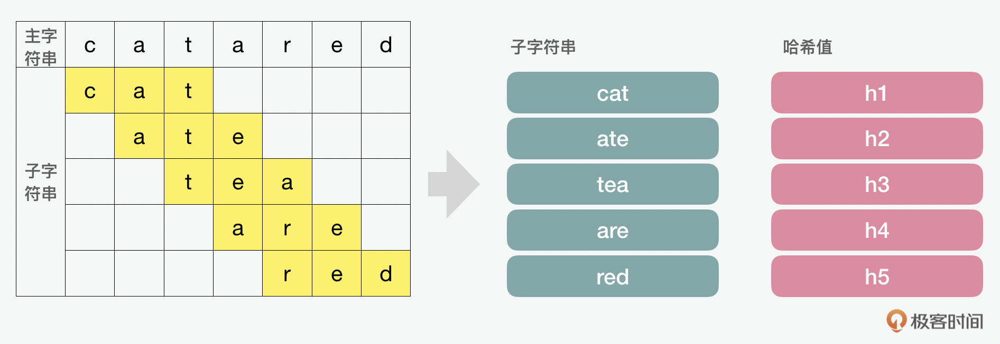
那么对比这几种字符串匹配的方式，它们的复杂度如何呢？如果我们定义字符串的长度是m，模式串的长度是n的话，那么下面就是它们各自的复杂度。我们可以看到暴力没有预处理的花费，但是处理过程本身的复杂度很高。BM在数据量比较大的时候会比较有优势，而KMP在数据量比较小的时候比较有优势。而和单个的字符串相比，RP在处理比较多的需要被匹配的字符串输入的时候，会更有优势。
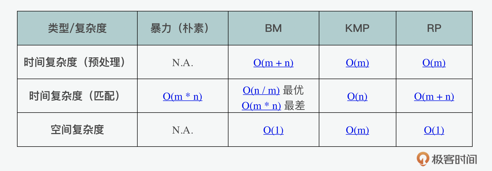
字符串的匹配算法有哪些
那我们经常说的路由，是用的哪一种的？它用的一种特殊的字典树（trie）。
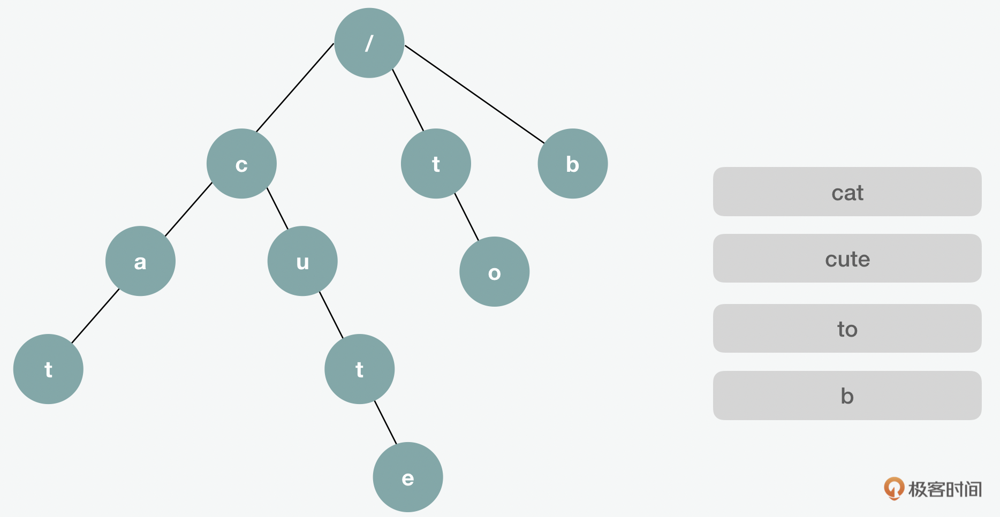
在这个过程中，如果搜索的字符串的长度是w的话，那么它的插入、搜索和删除的时间复杂度都是\(O(w)\)；而如果m是输入的词的数量，n是最长的单词的话，那么它的空间复杂度是\(O(m\*n)\)。由于这种比较高的空间复杂度需求，所以字典树的结构最适合用来搜索具有相同的前缀的不同的字符串。但是不适合在某一个字符串中搜索某一个模式串。因此，这一点特别适用于路由中的查询。
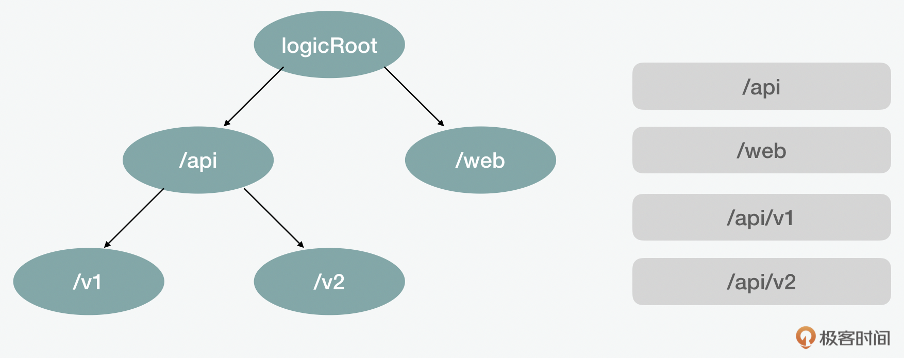
那么字典树是如何实现的呢？这里面用到的方式是一个嵌套的对象。其中每一层都有子对象作为子节点。这里面需要考虑的是搜索、插入和删除这些场景的操作。搜索可以通过设置一个临时的当前变量来根据目前检查到的节点内容来更新。那么对于插入和删除来说呢，要注意的是在操作前确认之前是否已该节点已存在。如果说n是被查询的字符串的长度的话，那么无论是搜索还是插入或删除，这里的时间复杂度都是\(O(n)\)，因为每一个字符都是要被检查的。如果插入的字符串的数量是m，n是最长的字符串的话，它的空间复杂度是\(O(m \* n)\)。
所以从这里我们可以看出，对比其它常见的字符串查询，字典树更适合的是用来处理具有同样前缀的多个字符串。而在一个字符串中匹配一个单独的模式串，这种方式就不适合了，因为这样就会占用大量的空间内存。
总结
这一期，我们就讲到这里。那么通过图和树这两种数据结构呢，我们可以看出，它们最大的特点就是可以映射出现实世界中相对无序和未知的结构。从具象中看，我们可以发现它们可以用来解决web中的模块打包、路由等等。而抽象出来看，我们也可以看到算法所解决的问题经常是在混沌和未知中建立秩序，寻找出路。这对在杂乱的信息中梳理出秩序，或者我们在面临人生选择时，也是很有帮助的。同时，我们看到，在分析复杂度的问题时，我们思考的维度也要随之扩展。除了前几讲中提到的时间、空间和最好、最坏情况下的复杂度外，我们也要考虑预处理、不同应用场景下的复杂度。
思考题
今天的思考题是，我们在讲到拓扑实现的时候，用了数组和unshift。你觉得这种方式是最高效的吗？从空间和时间复杂度或其它的角度的分析，这里有没有什么优化空间？
期待在留言区看到你的分享，我们一起交流讨论。另外，也欢迎你把今天的内容分享给更多的朋友。我们下期再见！
© 2019 - 2023 Liangliang Lee. Powered by gin and hexo-theme-book.